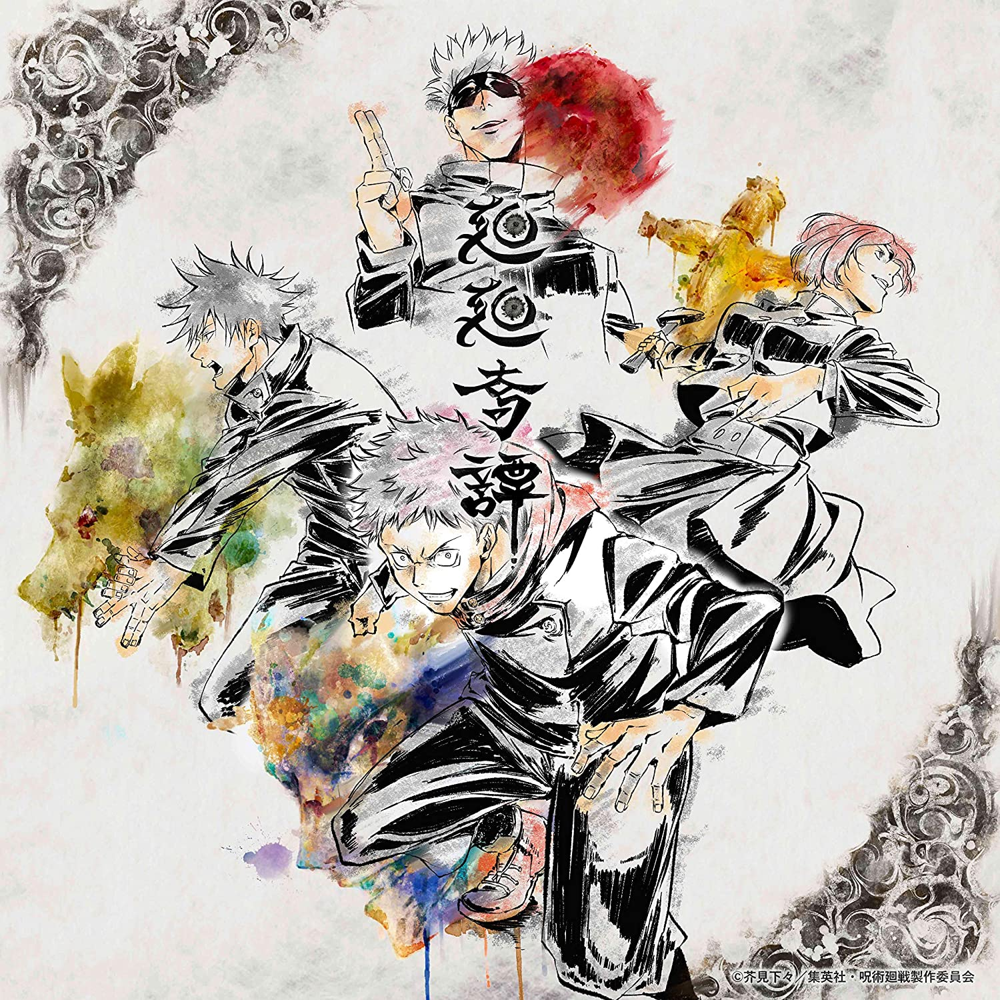

My Recommended anime
I want to recommended anime. The anime is "Jyujyutu kaisen(呪術廻戦)”.

"Jujutsu Kaisen" is a Japanese manga by Gege Akutami. Serialized in "Weekly Shonen Jump" (Shueisha) from the 14th issue of 2018. The atmosphere is very gloomy and dark because the theme is "curse". It is characterized by a very tense style because people die calmly. However, there are relatively many gag elements that are sandwiched between the character's actions and dialogue.In the anime, the first period was broadcast from October 3, 2020 to March 27, 2021. The second period is scheduled to be broadcast from 2023.
On December 24, 2021, "Theatrical Version Jyujyutsu Kaisen 0" was screened in Japan.
アニメ】呪術廻戦 | 動画配信のTSUTAYA TV
Jujutsu Kaisen's song
Kaikaikitan

"Kaikai Kitan" is a song by Eve. It has been appointed as the first cool opening theme song of the TV anime "Jujutsu Kaisen". The content of this song was very close to the world view of the work. Although esoteric phrases are used here and there, it is also very attractive that they express the mysterious world of the work. Buddhist terms are used here and there, and I think that the lyrics strongly express the desire to "sing" instead of "recite" that Eve himself said.
廻廻奇譚 / 蒼のワルツ」呪術盤: Amazon.fr: CD et Vinyles}